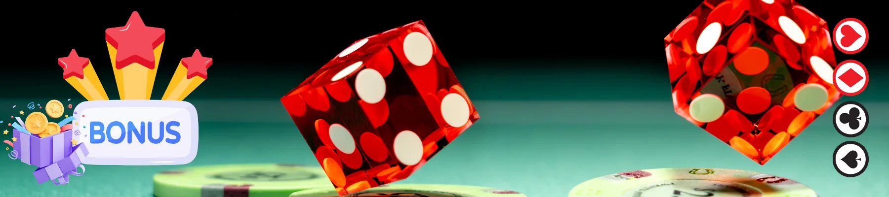

Ice Fishing Game in Nederland – Wat Moet Je Weten Voor Je Speelt?
De laatste tijd is er veel opwinding rond de ice fishing game. Spelers in Nederland (vaak afgekort als NL) zijn nieuwsgierig naar dit unieke spelconcept. Maar wat is het precies? Het is een visueel aantrekkelijk spel dat de rust van het ijsvissen combineert met de spanning van een online casino. Je ziet vaak termen als casino ice fishing game, ice fishing money game en de vraag of het ice fishing game real or fake is. In deze uitgebreide gids voor 2026 duiken we diep in de materie. We behandelen alles: van de eenvoud van een ice fishing game free demoversie tot de risico's en beloningen van spelen met echt geld. Of je nu een doorgewinterde gokker bent in Nederland of een nieuwkomer die een leuke ice fishing game app zoekt, dit artikel geeft je alle inzichten om een weloverwogen beslissing te nemen. We vergelijken het met andere spellen, leggen de technologie uit en geven je een duidelijke checklist om te bepalen of dit speltype iets voor jou is. Lees verder en ontdek of jij de grote vangst binnen kunt halen in deze populaire online game.
Ontdek de Beste Ice Fishing Games in NL| Kenmerk | Ice Fishing Game | Traditionele Gokkast | Voordeel |
|---|---|---|---|
| 🎯 Thema & Gameplay | Uniek ijsvissen, interactief boren en vangen | Standaard rollen en winlijnen | Meer variatie en betrokkenheid |
| 💰 Minimale Inzet (Real Money) | Vanaf €0,10 per spelronde | Vaak vanaf €0,20 | Toegankelijker voor kleinere budgetten |
| 📱 App Beschikbaarheid | Ja, speciale ice fishing game app bij sommige casino's | Meestal via browser | Optimaal mobiel spelplezier |
| 💳 Betaalmethoden (NL) | iDEAL, PayPal, Creditcard, Apple Pay | iDEAL, Creditcard | Flexibelere stortingsopties |
| ⏱️ Uitbetalingstijd (Echt Geld) | 1-24 uur (bij e-wallets zoals PayPal) | 1-3 werkdagen | Sneller bij ice fishing money game |
🧠 2. Hoe Speel Je Ice Fishing Game Stap Voor Stap?
Stap 1 – Registratie (indien casino ice fishing game)
Voordat je kunt genieten van een casino ice fishing game, moet je een account aanmaken bij een betrouwbaar online casino in Nederland. Dit proces is gelukkig snel en eenvoudig. Je zoekt een gerenommeerde aanbieder met een Nederlandse vergunning, klikt op 'Registreren' en vult je persoonlijke gegevens in: volledige naam, adres, e-mailadres en geboortedatum ter verificatie van je leeftijd (18+). Vaak moet je ook je telefoonnummer verifiëren via een SMS-code. Deze stap is cruciaal voor de veiligheid en om te voldoen aan de strenge Nederlandse wetgeving. Na registratie kun je direct inloggen en de spelbibliotheek verkennen.
Stap 2 – Demo of ice fishing game free kiezen
Voor je ook maar één euro uitgeeft, is het verstandig om de ice fishing game free versie te proberen. Vrijwel elk online casino dat dit spel aanbiedt, heeft een demomodus. Dit is een geweldige manier om de gameplay te leren kennen zonder risico. Je krijgt een bepaalde hoeveelheid nepgeld waarmee je kunt oefenen. Je leert hoe je het ijs moet boren, welke vissen de hoogste multipliers opleveren en hoe de bonusronde werkt. Het is de perfecte voorbereiding om later met een gerust hart over te stappen naar de ice fishing game real variant. Zie het als een oefenwedstrijd voor de echte uitdaging.
Stap 3 – Overgaan naar ice fishing game real
Zodra je vertrouwd bent met de regels en de spanning, kun je de overstap maken naar de ice fishing game real modus. Dit betekent dat je met echt geld gaat spelen. Ga naar het spel, zet de demoversie uit (als die nog actief is) en je ziet de optie om een inzet te plaatsen. Het is aan te raden om klein te beginnen. De meeste spellen hebben een minimale inzet van slechts €0,10 per ronde. Dit minimaliseert het risico terwijl je went aan het spelen met echt geld. Vanaf dit moment tellen je winsten ook echt en kun je ze laten uitbetalen.
"Ik vond de overgang van de demo naar de ice fishing money game heel soepel verlopen. Doordat ik de bonus al kende uit de gratis versie, wist ik precies wanneer ik moest meer inzetten. Het voelde vertrouwd, maar met extra spanning!" – Lars, speler uit Utrecht.
Stap 4 – Geld beheren bij ice fishing money game
Goed geldbeheer is het allerbelangrijkste bij het spelen van een ice fishing money game. Stel van tevoren een budget in dat je bereid bent te besteden, en beschouw dit als de kosten voor je entertainment. Deel dit budget op in kleinere sessies. Als je bijvoorbeeld €50 hebt, kun je besluiten om 5 sessies van €10 te spelen. Zodra het budget voor een sessie op is, stop je of neem je een pauze. Win je? Dan kun je een deel van de winst opzijzetten en met de rest verder spelen. Gebruik de ingebouwde functies van het casino, zoals stortingslimieten, om de controle te houden. Dit is de sleutel tot verantwoord en leuk spel.
📱 3. Ice Fishing Game App – Mobiel Spelen in NL
Wanneer kies je voor een ice fishing game app?
Een speciale ice fishing game app is ideaal voor de speler die het meeste gemak zoekt. Je downloadt de app van het casino rechtstreeks vanuit de App Store (voor iOS) of via de website (APK voor Android). Het grote voordeel is dat de app vaak nóg sneller en vloeiender werkt dan een mobiele website. Pushnotificaties houden je op de hoogte van de nieuwste bonussen of als de vissen weer bijten in het spel. Kies voor een app als je van plan bent vaak en langere tijd te spelen op je telefoon, en je het niet erg vindt om wat opslagruimte te gebruiken voor een geoptimaliseerde ervaring.
Browser alternatief zonder download
Geen zin om een app te downloaden? Geen enkel probleem. De meeste online casino's in Nederland zijn volledig geoptimaliseerd voor mobiel browsen. Je opent gewoon de browser op je smartphone (Chrome of Safari), gaat naar de website van het casino, logt in en start de online ice fishing game. De website past zich automatisch aan je scherm aan, alle knoppen zijn goed klikbaar en de game zelf draait soepel. Dit is de perfecte oplossing voor de incidentele speler of als je niet nog een app aan je telefoon wilt toevoegen. Je hebt altijd en overal toegang, zolang je internetverbinding hebt.
Veilig mobiel spelen in Nederland
Veiligheid staat voorop, of je nu een app gebruikt of via de browser speelt. Zorg er altijd voor dat het casino waar je speelt een geldige vergunning heeft van de Kansspelautoriteit (Ksa). Dit is je garantie voor eerlijk spel en bescherming. Gebruik daarnaast beveiligde wifi-verbindingen en deel nooit je inloggegevens. Een goede ice fishing game app van een legaal casino maakt gebruik van dezelfde SSL-encryptie als de website, waardoor je persoonlijke en financiële gegevens veilig zijn. In NL is mobiel spelen net zo veilig als op de desktop, mits je de juiste aanbieder kiest.
💸 4. Ice Fishing Money Game – Wat Zijn de Risico’s?
Wanneer wordt ice fishing game een geldspel?
Een ice fishing game transformeert in een ice fishing money game op het moment dat je een positieve accountbalans hebt en een inzet plaatst vanuit je eigen, met echt geld gevulde, saldo. Vanaf dat punt zijn de uitbetalingen ook in echt geld. De spanning neemt toe, maar dat geldt ook voor het financiële risico. Het is geen spelletje meer, maar een vorm van online gokken. Het is essentieel om je hiervan bewust te zijn. De graphics en het leuke thema blijven hetzelfde, maar de inzet is plotseling heel reëel.
Inzetcontrole
De sleutel tot het beheersen van de risico's van een ice fishing money game ligt in inzetcontrole. Gelukkig bieden verantwoorde casino's in Nederland uitgebreide tools. Voordat je begint met spelen, kun je in je account dag-, week- of maandlimieten instellen voor stortingen en verliezen. Ook kun je een realiteitscheck instellen, die je na een bepaalde speeltijd waarschuwt. Bepaal je inzet per ronde verstandig: speel nooit met geld dat je niet kunt missen. Een goede vuistregel is om per ronde niet meer dan 1% tot 2% van je totale sessiebudget in te zetten. Zo kun je langer spelen en zijn verliezen beter te behappen.
"Wat ik fijn vind aan de the ice fishing game in het casino waar ik speel, is dat je per spin echt maar een paar cent kunt inzetten. Zo kan ik met een klein budget heel lang doen en blijft het leuk en ontspannen." – Femke, speelster uit Amsterdam.
Wat betekent ice fishing game real in praktijk?
'Ice fishing game real' betekent in de praktijk dat je deelneemt aan een kansspel met een Random Number Generator (RNG) die de uitkomst van elke worp, of in dit geval visvangst, bepaalt. Het is volledig willekeurig. De ene keer vang je een klein visje met een lage multiplier, de andere keer bijt er een zeldzame vis met een hoge prijs. Je kunt ook de bonusronde activeren, wat vaak de meest lucratieve fase is. Het is puur geluk, dus er is geen strategie die je winst kan garanderen. Het is entertainment met een kans op een geldprijs, niet meer en niet minder. Het is aan jou om te beslissen of die spanning de risico's waard is.
| 🎣 Kenmerk van de Game | Ice Fishing Game | Traditionele Gokkast | Crash Game (bijv. Spribe) |
|---|---|---|---|
| Gemiddelde RTP (Return to Player) | Rond de 96,5% | Tussen 94% en 98% | Rond de 97% (variabel) |
| Gemiddelde Volatiliteit | Medium-Hoog | Varieert van Laag tot Hoog | Hoog (snel spel, grote schommelingen) |
| Speelduur per Ronde | Enkele seconden tot minuut (incl. bonus) | 2-3 seconden | Enkele seconden tot minuten |
| Maximale Winst (voorbeeld) | Vaak 5000x tot 10.000x inzet | Varieert enorm, soms 10.000x+ | Kan oplopen tot zeer hoge multipliers |
| Skill Factor | Zeer laag (puur geluk) | Zeer laag (puur geluk) | Laag (timen van uitcashen) |
🆚 5. Online Ice Fishing Game vs Andere Speltypes
Vergelijking met slots
Op het eerste gezicht lijkt een online ice fishing game veel op een traditionele gokkast. Beiden zijn gebaseerd op RNG en draaien om geluk. Het grote verschil zit hem in de presentatie en interactie. Waar een slot draait om rollen met symbolen, biedt een ice fishing game een meer thematische en visuele ervaring. Je voelt alsof je zelf aan het vissen bent. De bonusrondes zijn vaak ook interactiever; je moet bijvoorbeeld zelf een gat in het ijs kiezen of de lijn binnenhalen. Dit kan de betrokkenheid verhogen, maar verandert niets aan de willekeurige uitkomst. Qua RTP en volatiliteit zijn ze vergelijkbaar met medium-volatility slots.
Vergelijking met crash games
Crash games, zoals die van Spribe, zijn een heel ander type spel. Hier zet je in op een oplopende multiplier die op een willekeurig moment kan 'crashen'. Jij moet je winst uitcashen voordat dat gebeurt. Dit geeft een enorme spanning en een gevoel van controle, ook al is het moment van crashen willekeurig. Een casino ice fishing game is voorspelbaarder in die zin dat je gewoon een ronde speelt en de uitkomst direct ziet. Er is geen 'timen'. Voor spelers die van een korte, intense spanning houden, zijn crash games interessant. Voor spelers die een meer ontspannen, thematische ervaring willen, is ice fishing de betere keuze.
Vergelijking met live casino
Live casino spellen, zoals live roulette of blackjack, zijn een wereld van verschil. Hier speel je tegen een echte croupier die via een videostream in real-time handelt. Het sociale aspect en de echtheid van de kaarten of het rad zijn uniek. Een ice fishing game is, net als een slot, een volledig geautomatiseerd computerspel. Er is geen menselijke interactie. Live casino spellen hebben vaak een lager huisvoordeel bij strategisch spel (bijv. blackjack), terwijl ice fishing puur op geluk gebaseerd is. De keuze hangt af van wat je zoekt: de spanning van een echt casino en interactie (live) of een relaxte, snelle en visueel aantrekkelijke ervaring (ice fishing).
🎥 6. Ice Fishing Game Live – Marketing of Echt Live?
Wat bedoelen aanbieders met live?
Wanneer een casino adverteert met een 'ice fishing game live', is het belangrijk om goed te lezen wat ze ermee bedoelen. In 99% van de gevallen heeft dit niets te maken met een live dealer. Het is marketingtaal die de dynamische en real-time aard van het spel benadrukt. Ze willen zeggen dat het spel 'tot leven komt' met animaties, of dat je de actie van het vissen 'live' kunt volgen op je scherm. Soms verwijst het naar toernooien die 'live' plaatsvinden, waarbij spelers tegen elkaar strijden op dezelfde game. Het is dus een term die de beleving omschrijft, niet de technische werking.
Verschil tussen live gevoel en echte live dealer
Het onderscheid is cruciaal. Een 'live gevoel' wordt gecreëerd door goede graphics, geluidseffecten en een vloeiende gameplay. De ice fishing game kan je het gevoel geven dat je op een bevroren meer zit. Een 'echte live dealer' ervaring (zoals bij Evolution Gaming) is fundamenteel anders. Dan is er een echte presentator in een studio die kaarten deelt of een rad draait, en jij kunt via een chat met hem of haar praten. Voor de ice fishing game bestaat deze live variant (nog) niet algemeen. Het is dus bijna altijd een RNG-gebaseerd spel met een meeslepende presentatie. Wees je hiervan bewust, zodat je weet wat je kunt verwachten.
⚠️ 7. Ice Fishing Game Real or Fake – Checklist
Een veelgestelde vraag, vooral door beginners, is of een ice fishing game real or fake is. Het antwoord is tweeledig. Het spel zelf is 'echt' in de zin dat het bestaat en dat je het kunt spelen. De uitkomsten zijn 'echt' willekeurig. Maar de vraag doelt vaak op de legitimiteit. Gebruik deze checklist om te bepalen of een ice fishing game real or fake (oftewel betrouwbaar of oplichterij) is:
- Vergunning: Check of het casino een geldige vergunning heeft van de Kansspelautoriteit (Ksa). Dit is het belangrijkste keurmerk voor NL. Zonder vergunning: wegblijven.
- Certificering RNG: Zoek naar informatie dat de Random Number Generator (RNG) van het spel is getest door een onafhankelijk bureau zoals iTech Labs of GLI. Dit garandeert dat de uitkomsten willekeurig en niet te manipuleren zijn.
- Recensies en Naam: Zoek online naar ervaringen van andere spelers in Nederland. Staat het casino bekend om snelle uitbetalingen en goede klantenservice? Of zijn er veel klachten?
- Transparantie: Een betrouwbaar casino is transparant over de spelregels, de RTP en de bonusvoorwaarden. Als alles vaag en onduidelijk is, is dat een alarmsignaal.
- Contactmogelijkheden: Is er een Nederlandse klantenservice bereikbaar via live chat of telefoon? Test deze even met een vraag. Een snelle en behulpzame reactie is een goed teken.
Als een spel of casino aan deze punten voldoet, kun je er gerust van uitgaan dat de ice fishing game real en betrouwbaar is.
📊 8. Wanneer Is Ice Fishing Game Geschikt Voor Jou?
Niet elk type spel is voor iedereen weggelegd. Een online ice fishing game is vooral geschikt voor jou als je:
- Houdt van een ontspannen thema en een visueel aantrekkelijke spelomgeving.
- Op zoek bent naar een spel met een lage instapdrempel, zowel qua regels als qua minimale inzet (vanaf €0,10).
- De spanning van een bonusronde waardeert, maar niet de constante adrenaline van een crash game nodig hebt.
- Een fan bent van ijsvissen of gewoon een uniek thema zoekt anders dan de standaard fruitautomaten.
- Het spel voornamelijk als entertainment ziet en bereid bent een klein budget te riskeren voor de kans op een leuke prijs.
Het is minder geschikt als je op zoek bent naar een spel met een strategische component, hoge interactie met andere spelers, of de sfeer van een echt casino met een live dealer. Voor de casual speler in Nederland die afwisseling zoekt, is het echter een schot in de roos. Probeer eerst de ice fishing game free versie om te ontdekken of de gameplay je bevalt, voordat je overstapt op de ice fishing money game variant.
❓ FAQ – Gericht op Zoekintentie
Is ice fishing game real or fake?
Kan ik ice fishing game free spelen zonder geld?
Wat is een ice fishing money game precies?
Is er een veilige ice fishing game app?
Is casino ice fishing game legaal in Nederland?
Wat betekent ice fishing game real?
Is the ice fishing game anders dan andere online games?
Meer Vragen over de Ice Fishing Game
Wat is de beste strategie voor een ice fishing money game?
Zijn er speciale toernooien voor de ice fishing game in NL?
Kan ik ice fishing game spelen met een bonus?
Klaar om de spanning van het ijsvissen te ervaren?
Of je nu kiest voor een ontspannen sessie met de demoversie of de extra kick van een ice fishing money game zoekt, de wereld van online ijsvissen wacht op je in Nederland. Met deze gids ben je nu goed voorbereid. Je weet wat de termen betekenen, hoe je een betrouwbare ice fishing game app vindt en, het allerbelangrijkste, hoe je verantwoord speelt. Onthoud: het is entertainment. Stel je limieten, geniet van de jacht op de grote vangst, maar verlies nooit de realiteit uit het oog. De vissen bijten, maar alleen jij bepaalt hoe vaak en met hoeveel risico je je hengel uitwerpt. Veel succes en plezier!
Speel Ice Fishing Game bij een Legaal Casino in NL